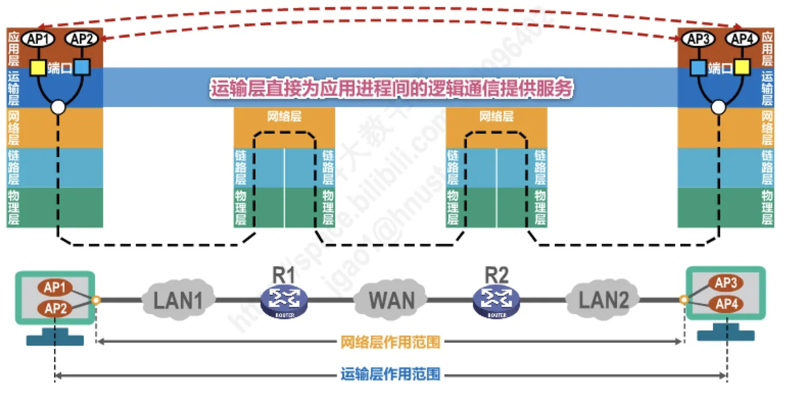
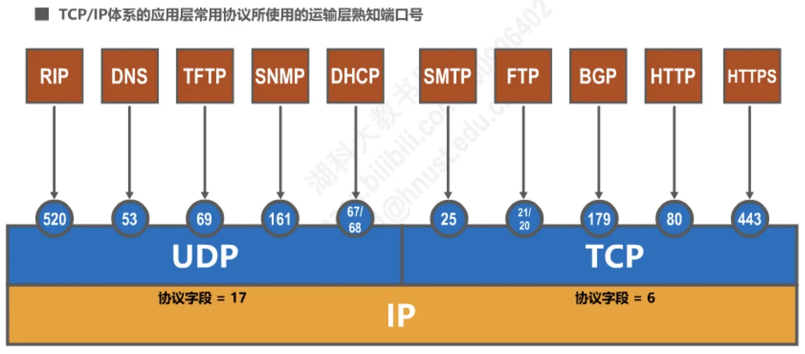
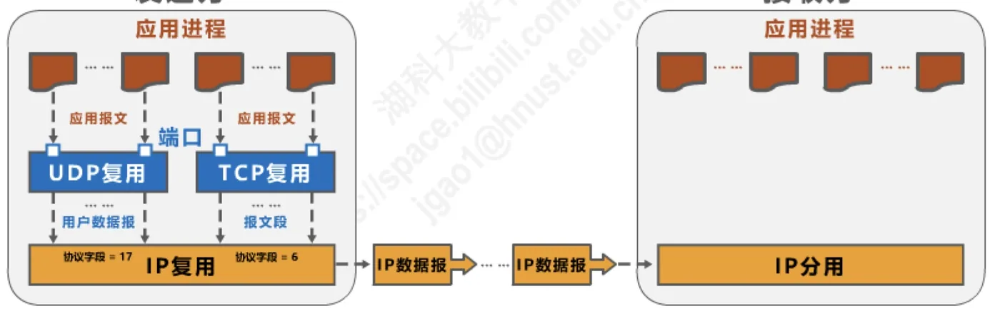
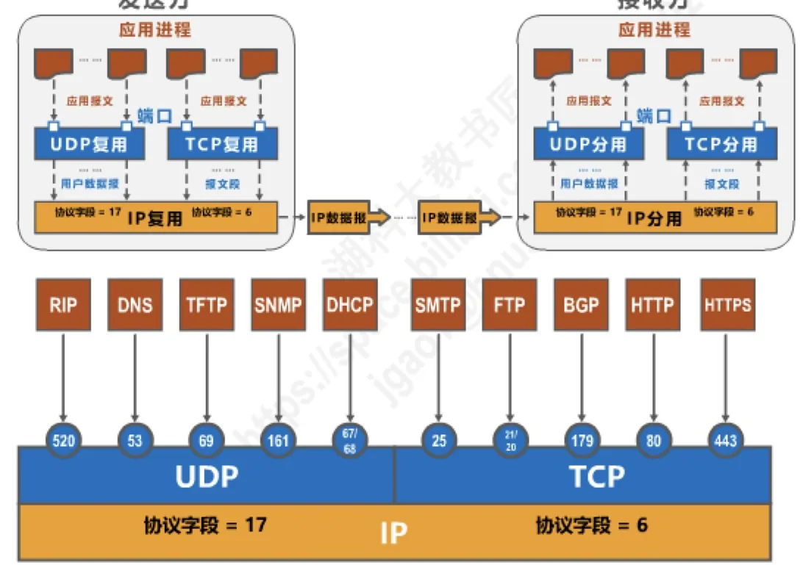
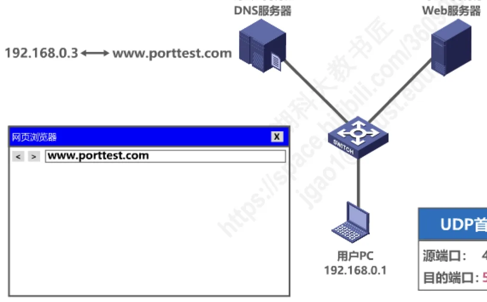
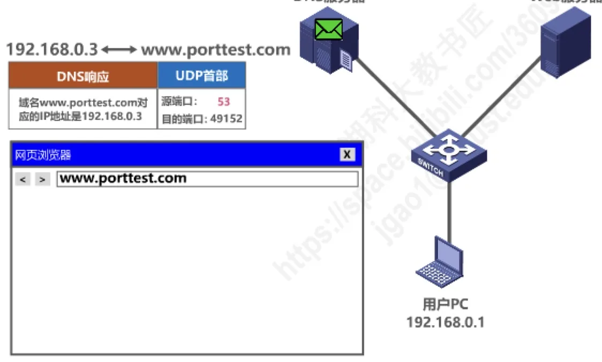
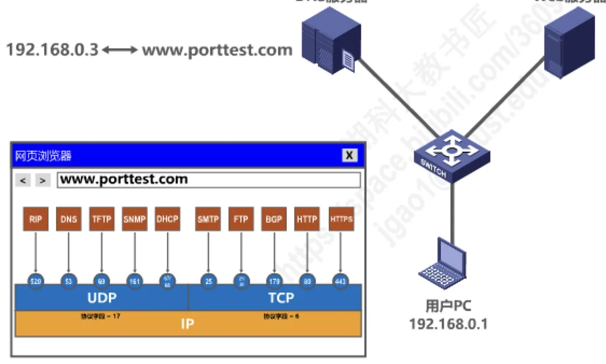

计算机通信与网络 · 第 5 章 运输层
5.2 运输层端口号、复用与分用的概念
上一节我们看到，运输层为应用进程之间提供端到端的逻辑通信。可是一个主机里同时跑着浏览器、邮件客户端、下载工具等许多进程，运输层把数据交给谁？本节回答这个问题：TCP/IP 体系的运输层用端口号来区分应用层的不同进程，并由此引出复用与分用这两个贯穿全章的基本概念，最后用一次真实的网页浏览把端口号串起来看一遍。
1. 运输层直接为应用进程间的逻辑通信提供服务
先重温一下运输层所处的位置。网络层的作用范围是从一台主机到另一台主机，它负责把 IP 数据报送到目的主机；而运输层的作用范围要再往上走一层，是从源主机中的应用进程到目的主机中的应用进程。也就是说，真正使用通信功能的是进程，运输层直接为应用进程之间的逻辑通信提供服务。

图中 LAN1、LAN2 通过路由器 R1、R2 和广域网 WAN 互连，位于 LAN1 的应用进程 AP1 与位于 LAN2 的应用进程 AP3 之间可以像面对面一样交换数据，中间的这些网络对它们而言是透明的。这正是运输层「端到端」的含义，也是本节讨论端口号的前提。
2. 为什么必须用端口号标识应用进程
在单个操作系统内部，运行着的进程是用进程标识符 PID（Process Identifier）来标志的。那么能不能直接用 PID 做网络通信中的进程标识呢？不能，原因有两条：
- 因特网上的计算机并不使用统一的操作系统。Windows、Linux、macOS 等不同操作系统给进程编号的格式和规则各不相同，PID 只在本机内部有意义；
- 即使两台主机都装了同一种操作系统，两个 PID 相同的进程之间也没有任何对应关系。
因此，要让运行不同操作系统的计算机上的应用进程之间能够互相通信，就必须用一种与操作系统无关的统一方法来标识 TCP/IP 体系中的应用进程。TCP/IP 体系的运输层采用的办法就是端口号：用端口号来区分应用层的不同应用进程。
3. 端口号的取值范围与分类
端口号用 16 比特表示，因此取值范围是 0～65535。按用途和分配方式，这 65536 个端口号被划分为三类（图 2）：

（1）熟知端口号：0～1023
因特网号码指派管理局 IANA（Internet Assigned Numbers Authority）把这一区间指派给了 TCP/IP 体系中最重要的一些应用协议，属于「固定搭配」，用户不能随意占用。例如：FTP 使用 21 和 20，HTTP 使用 80，DNS 使用 53。
（2）登记端口号：1024～49151
这一区间供没有熟知端口号的应用程序使用。使用这类端口号必须在 IANA 按照规定的手续登记，目的是防止不同应用程序之间出现端口号重复。例如微软远程桌面 Microsoft RDP 使用的端口是 3389。
（3）短暂端口号：49152～65535
这一区间留给客户进程选择、暂时使用，所以又叫动态端口号。客户进程发起通信时，由操作系统从这一区间临时分配一个端口号给它；服务器进程收到客户进程发来的报文时，也就同时知道了客户进程所使用的端口号，回送报文时把它填在目的端口字段里。通信结束后这个端口号被收回，可以供其他客户进程以后使用。
还有一条很重要的性质：端口号只具有本地意义。端口号只是为了标识本计算机应用层中的各个进程，在因特网中，不同计算机上的相同端口号之间是没有联系的。A 主机上的 80 端口和 B 主机上的 80 端口各自独立，互不相干；端口号必须和 IP 地址合在一起，才能在全网范围内唯一地确定一个通信的端点。
4. 发送方的复用与接收方的分用
有了端口号，就可以把应用层的进程和运输层、网络层串起来了。这里要区分两个方向上的动作（图 3）：
- 发送方的复用（multiplexing）：发送方应用层的多个应用进程，都可以通过各自的端口号把应用报文交给运输层，由运输层统一封装成用户数据报（UDP）或报文段（TCP）；运输层再把它们交给网络层，由网络层统一封装成 IP 数据报。这个「多个来源合到一条通道上」的过程就是复用。
- 接收方的分用（demultiplexing）：接收方收到 IP 数据报后先由网络层分用，把数据部分交给运输层；运输层再根据首部中的端口号，把数据交给正确的应用进程。这个「从一条通道上分出多个目的地」的过程就是分用。

注意图中另外两个细节：一是运输层选择哪种协议，会体现在 IP 数据报首部的协议字段上——UDP 对应 17，TCP 对应 6，网络层正是靠它决定把数据交给谁来分用；二是无论发送方还是接收方，端口号都位于运输层首部的最前面，因为分用首先要读到的就是它。
5. TCP/IP 体系常用协议使用的熟知端口号
把常用的应用层协议和它们的熟知端口号对照起来记，是这一节最实用的部分（图 4）：
| 运输层协议 | 应用层协议 | 熟知端口号 |
|---|---|---|
| UDP（协议字段 = 17） | RIP | 520 |
| DNS | 53 | |
| TFTP | 69 | |
| SNMP | 161 | |
| DHCP | 67（服务器）／68（客户） | |
| TCP（协议字段 = 6） | FTP | 21（控制）／20（数据） |
| SMTP | 25 | |
| BGP | 179 | |
| HTTP | 80 | |
| HTTPS | 443 |
这里有一处容易看错的地方：SMTP 用的是 TCP，端口号 25，并不属于 UDP 那一组。原讲义这张图上协议图标与端口号是分列排布的，两栏交界处的数字（如 25、179）初看容易归错组，记忆时以「UDP 一侧是 RIP、DNS、TFTP、SNMP、DHCP，TCP 一侧是 FTP、SMTP、BGP、HTTP、HTTPS」为准。DHCP 占用两个端口号也是一个易考点：服务器用 67，客户用 68，因为客户在获得 IP 地址之前并不知道自己的地址，只能靠广播，所以必须有一个固定的、专门给客户用的端口。
另外补充两点现代注记：其一，DNS 通常使用 UDP 的 53 端口，但当响应报文过长或进行区域传送时会改用 TCP 的 53 端口，所以严格说 DNS 的端口号是 53，运输层协议视场合而定；其二，HTTP 的 80 与 HTTPS 的 443 已被后续标准固化下来，如今大量站点默认走 HTTPS，443 的使用频率已超过 80。

6. 举例：一次网页浏览中的端口号
下面用原讲义的一个例子，把上述规则放进真实的通信过程里。用户 PC 的 IP 地址是 192.168.0.1，本地 DNS 服务器的地址是 192.168.0.2，要访问的 Web 服务器域名是 www.porttest.com，其 IP 地址是 192.168.0.3。
（1）第一步：用 DNS 把域名解析成 IP 地址
浏览器只知道域名，必须先查到它的 IP 地址。于是 PC 上的 DNS 客户进程构造一个 DNS 查询请求，交给运输层封装成 UDP 用户数据报：源端口 49152，目的端口 53。源端口是从短暂端口号区间里临时分配的，目的端口 53 则是因为要访问的是 DNS 服务器。这就体现了「客户用短暂端口、服务器用熟知端口」的分工。

DNS 服务器收到用户数据报后，运输层按照目的端口号 53 把它交给 DNS 服务器进程。服务器进程查到 www.porttest.com 对应 192.168.0.3，构造 DNS 响应，仍然封装成 UDP 用户数据报，但两个端口号要反过来填：源端口 53，目的端口 49152。用户 PC 收到后，运输层按目的端口 49152 把数据交给当初发出请求的那个 DNS 客户进程——同一台 PC 上可能有很多进程在用 UDP，靠的就是这个端口号来分用。

（2）第二步：用 HTTP 取回网页
拿到 IP 地址后，浏览器向 192.168.0.3 发起 HTTP 请求。HTTP 使用 TCP，因此这次封装的是 TCP 报文段：源端口 49152，目的端口 80，目的端口 80 就是 Web 服务器的熟知端口号。Web 服务器进程收到后返回 HTTP 响应，TCP 首部同样把两个端口号对调：源端口 80，目的端口 49152，用户 PC 据此把网页内容交给浏览器进程。

整个过程只有一次「查域名」，却用到了 UDP 和 TCP 两种运输层协议、两个不同的熟知端口号，而 PC 一侧始终使用同一个短暂端口号 49152 来标识这次浏览所对应的应用进程。把这四个步骤的端口号对照着看，端口号的作用就非常直观了：IP 地址定位到主机，端口号定位到进程。
本节小结
- 运输层的作用范围是应用进程到应用进程；为了在不同操作系统之间统一标识应用进程，TCP/IP 体系用 16 比特的端口号来区分应用层的不同进程，取值范围 0～65535。
- 端口号分三类：熟知端口号 0～1023（IANA 指派给重要应用协议，如 FTP 21/20、HTTP 80、DNS 53）、登记端口号 1024～49151（需向 IANA 登记，如 RDP 3389）、短暂端口号 49152～65535（留给客户进程临时使用）。
- 端口号只具有本地意义，不同计算机上的相同端口号互不相干；端口号必须与 IP 地址配合才能唯一确定通信端点。
- 发送方复用：多个应用进程的报文经端口号汇聚到运输层，再经 IP 层封装成 IP 数据报；接收方分用：按 IP 首部的协议字段（UDP = 17、TCP = 6）交给对应运输层协议，再按运输层首部的端口号交给正确的应用进程。
- 网页浏览的例子：DNS 查询请求（源 49152、目的 53）→ DNS 响应（源 53、目的 49152）→ HTTP 请求（源 49152、目的 80）→ HTTP 响应（源 80、目的 49152）。